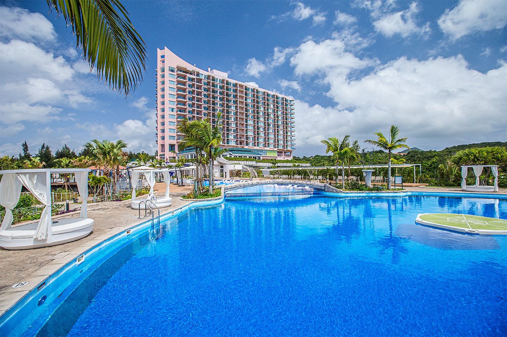
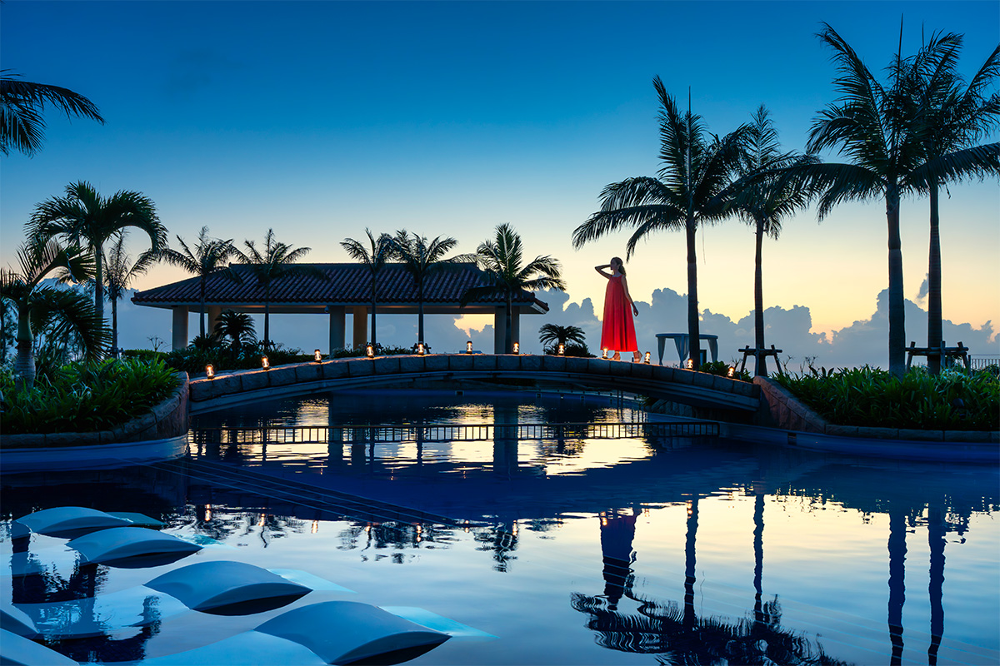
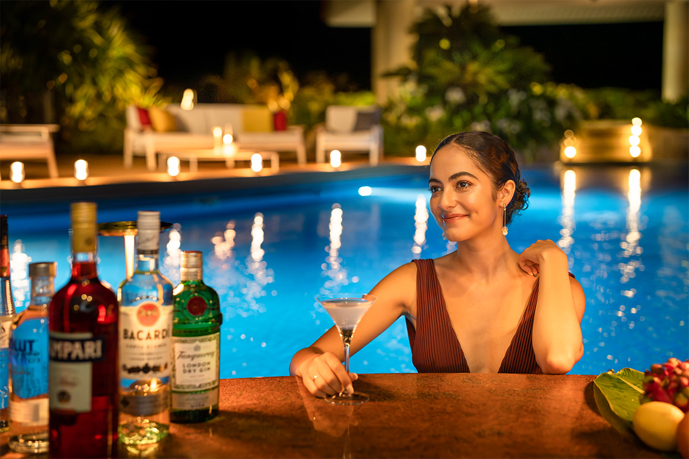
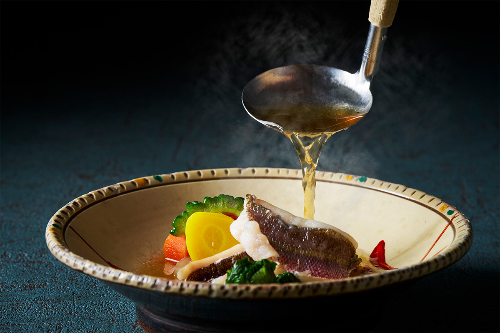
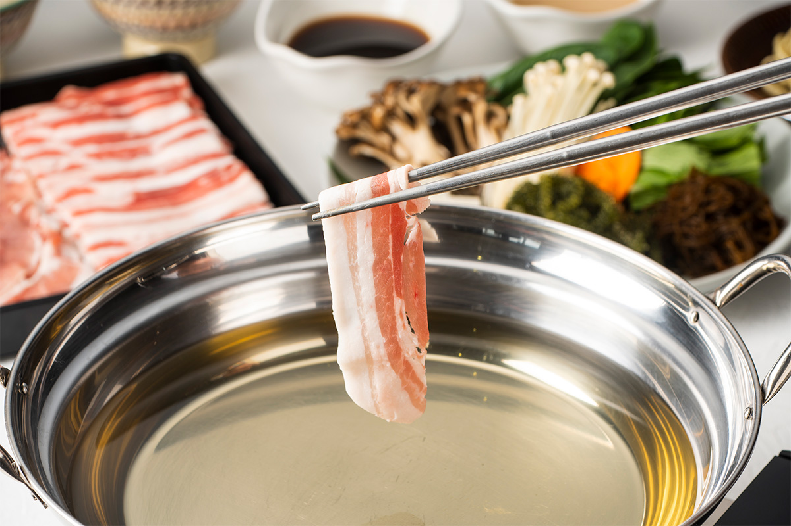
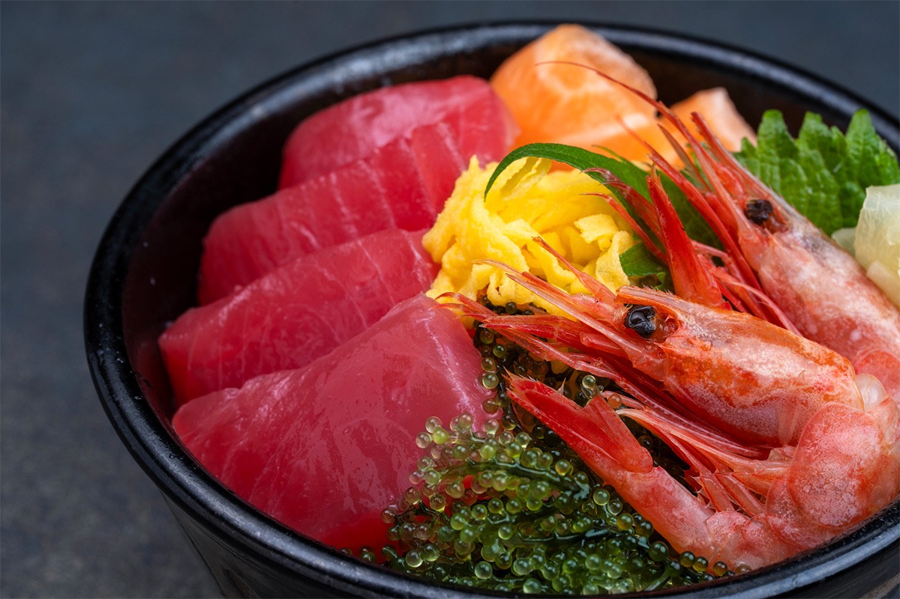

Префектура Окинава · Наго · отель
Oriental Hotel Okinawa Resort & Spa: ночной бассейн и бульон из тунца бонито у ворот Ямбару

Oriental Hotel Okinawa Resort & Spa стоит там, где начинается Ямбару, субтропический лесной север острова Окинава. Днём отсюда удобно ездить к лесам и мысам севера, а вечером возвращаться к бассейну и ужину.
Вечер
Бассейн под небом Восточно-Китайского моря
Ямбару называют зелёный север острова Окинава с его субтропическими лесами и ярко-синим морем. Отель в городе Наго стоит у самого входа в этот край, поэтому его легко сделать базой для поездок. Распорядок здесь складывается сам собой: днём лес и смотровые площадки севера, вечером неторопливый отдых в отеле.

Главное вечернее место отеля это «Садовый бассейн» длиной 170 метров. В 2026 году он работал до 21:00, а летом до 22:00. На закате небо из оранжевого становится густо-синим, по воде бегут огни подсветки, и бассейн выглядит совсем не так, как днём. С Восточно-Китайского моря дует тёплый ветер, и южная ночь тянется медленно.

На террасе у бассейна устраивают барбекю из местных продуктов: свинины агу и островных овощей. После ужина можно перейти в бар у бассейна и поговорить за коктейлем. Такой немного роскошный вечер бывает только в поездке.
Кухня
«Рюбинка»: бульон из бонито Мотобу
В отеле есть ресторан окинавского якинику и ресторан с буфетом и грилем, но самое интересное место открылось в июне 2026 года. Это «Рюбинка», ресторан окинавской кухни и сябу-сябу. Шеф готовит окинавские и авторские блюда на бульоне из сушёного тунца бонито, который делают в Мотобу, городке на северо-западе острова.

Основа ужина это смешанный бульон из бонито Мотобу и комбу с Хоккайдо. Лучше всего он раскрывается в сябу-сябу: тонкие ломтики мяса окунают в ароматный бульон, и он подчёркивает собственный вкус продуктов. Завершает ужин окинавская соба на том же бульоне, которым гордится шеф.

Утро
Тунец, который ни разу не замораживали
На завтрак подают «нахамагуро», дикого тунца из ближних вод Окинавы. Его ни разу не замораживают после улова и выгружают в порту Томари в Нахе. Рядом стоят морской виноград умибудо и местный кальмар сэика, так что окинавское море присутствует на столе с самого утра.

После дня в лесах Ямбару отель встречает бассейном и хорошей едой. Природа севера и курортный отдых здесь укладываются в одну поездку.
Oriental Hotel Okinawa Resort & Spa
- Адрес
- префектура Окинава, Наго, Кисэ, 1490-1
- Телефон
- +81 980-51-1000
- Цены / Вход
- от 18 200 иен за ночь с завтраком (номер Superior, с налогом и сервисным сбором)
- Номера
- 361
- Заезд / выезд
- 15:00 / 11:00
- Как добраться
- от аэропорта Наха около 1 часа 10 минут на машине или около 1 часа 40 минут на автобусе-лимузине